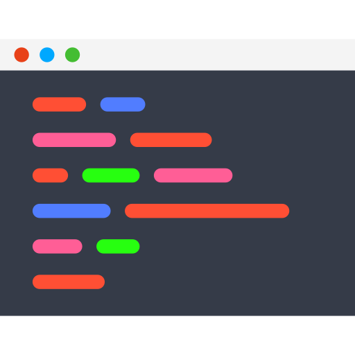

git clone"] VS["

VS Code"] ST["🌳 SourceTree"] REPO["📦 ~/git-labs/Hello-World"] GB --> REPO VS --> REPO ST --> REPO end GH["
GitHub
octocat/Hello-World
(public)"] GH -->|"git clone (HTTPS)"| GB

sourcecode/section_7_git_basic_operation/lab1_install_git/commands.sh.| Hệ điều hành | Cách cài đặt |
|---|---|
| Windows | Tải Git for Windows tại git-scm.com/downloads, cài với các tuỳ chọn mặc định. Bộ cài kèm sẵn Git Bash – terminal giống Linux. |
| Mac | brew install git (hoặc xcode-select --install) |
| Ubuntu / Debian | sudo apt install -y git |
| Amazon Linux 2023 | sudo dnf install -y git |
Mở Git Bash trên Windows bằng một trong hai cách: click chuột phải vào thư mục → Open Git Bash here, hoặc tìm “Git Bash” trong Start menu. Kiểm tra phiên bản:
git --version
git version 2.51.0.windows.1Tên và email sẽ được ghi vào mỗi commit. Dùng email trùng với email tài khoản GitHub để commit hiển thị đúng avatar:
git config --global user.name "Your Name"
git config --global user.email "your_email@example.com"
git config --global init.defaultBranch main
git config --global pull.rebase false
git config --global core.autocrlf true
git config --global core.editor "code --wait"
git config --global --list| Cấu hình | Ý nghĩa |
|---|---|
init.defaultBranch main | Repo tạo bằng git init dùng branch mặc định main (giống GitHub) |
pull.rebase false | git pull dùng merge (mặc định dễ hiểu cho người mới), tránh cảnh báo “divergent branches” |
core.autocrlf true | Windows: tự chuyển ký tự xuống dòng CRLF ↔ LF. Trên Mac/Linux dùng core.autocrlf input |
core.editor "code --wait" | Dùng VS Code để soạn commit message thay vì Vim |
Tải tại sourcetreeapp.com (Windows/Mac). Khi cài đặt có thể bỏ qua bước đăng nhập Bitbucket; ở bước chọn Git, chọn dùng System Git đã cài ở bước 1.
💡 SourceTree không bắt buộc. Có thể thay bằng tab Source Control có sẵn trong VS Code, extension Git Graph/GitLens, hoặc GitHub Desktop.
Tất cả repository của section này sẽ đặt trong thư mục ~/git-labs (trên Windows là C:\Users\<tên-user>\git-labs):
mkdir -p ~/git-labs
cd ~/git-labs
pwdRepository octocat/Hello-World là repo mẫu của GitHub, có nhiều branch để quan sát:
git clone https://github.com/octocat/Hello-World.git
cd Hello-World
ls -la
git status
git log --oneline
git branch
git branch -aQuan sát:
ls -la có thư mục ẩn .git – đây chính là local repository.git branch chỉ hiện branch local (master), còn git branch -a hiện thêm các branch trên remote dạng remotes/origin/....master.code .Trong VS Code: góc dưới bên trái hiển thị branch hiện tại; tab Source Control hiển thị các file thay đổi. Thử sửa file README rồi quay lại Git Bash chạy git status và git diff để thấy Git đã phát hiện thay đổi. Sau đó bỏ thay đổi bằng:
git restore README
git statusMở SourceTree, thêm repository có sẵn với thông số:
~/git-labs/Hello-WorldQuan sát danh sách Branches và Remotes → origin ở cột bên trái, biểu đồ commit ở tab History. Double-click vào một branch remote (ví dụ origin/test) để checkout thành branch local.
git --version hiển thị phiên bản Git.git config --global --list có user.name và user.email của bạn.~/git-labs/Hello-World tồn tại, git branch -a liệt kê được các branch remote.bash: git: command not found / 'git' is not recognized as an internal or external commandbash: code: command not foundcode chưa được thêm vào PATH.fatal: unable to access 'https://github.com/...': SSL certificate problemhttp.sslVerify false) vì không an toàn.~/git-labs/Hello-World (rm -rf ~/git-labs/Hello-World); thư mục ~/git-labs sẽ tiếp tục được dùng ở các lab sau.